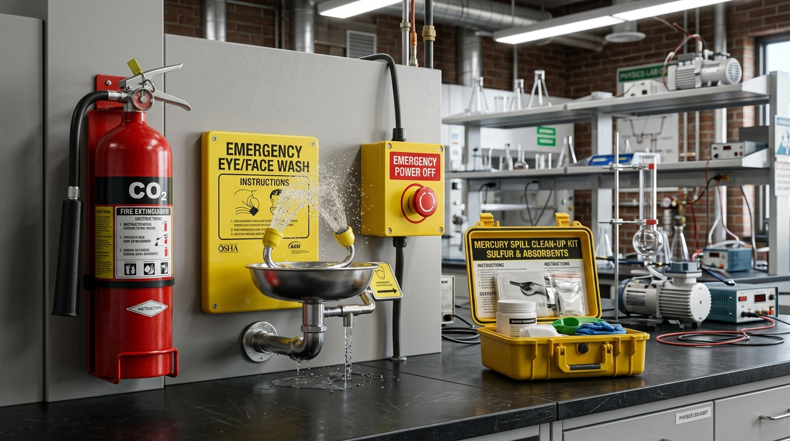

Bài 2: Các Quy Tắc An Toàn Trong Phòng Thực Hành Vật Lí

Trang thiết bị bảo hộ & dụng cụ thí nghiệm Vật lí chuẩn
NỘI DUNG BÀI HỌC
1. Các Nguy Cơ Mất An Toàn Thường Gặp Trong Phòng Thực Hành
Khi thực hiện các bài thực hành Vật lí (đặc biệt thuộc các chủ đề Điện học, Quang học, Nhiệt học và Áp suất chất khí), học sinh có thể gặp phải một số nguy cơ nguy hiểm nếu thao tác sai quy trình:
Xảy ra khi cắm trực tiếp thiết bị hạ áp vào nguồn 220 V, chạm tay ướt vào công tắc điện hoặc sử dụng dây dẫn bị tróc vỏ cách điện làm hở lõi đồng.
Khi sử dụng các bình chứa khí nén áp suất cao hoặc gia nhiệt ống nghiệm thủy tinh đậy kín gây nổ giải phóng mảnh vỡ với động năng lớn nguy hiểm.
Hóa chất thực hành văng bắn vào mắt hoặc da, hoặc vô tình làm rơi vỡ nhiệt kế thủy ngân làm thủy ngân bốc hơi độc hại vào không khí.
Chiếu thẳng chùm tia Laser cường độ cao vào mắt gây tổn thương võng mạc, hoặc chạm tay vào điện trở hay bình đun đang nóng gây bỏng nhiệt.

Quy trình kiểm tra máy biến áp nguồn đưa về 0 V trước khi cắm điện
2. Quy Tắc An Toàn Khi Sử Dụng Thiết Bị Thí Nghiệm Điện
Thí nghiệm điện là nội dung quan trọng và xuất hiện thường xuyên nhất. Học sinh bắt buộc phải ghi nhớ nguyên tắc "3 BƯỚC AN TOÀN ĐIỆN" sau đây:
- Đưa về 0 V: Trước khi cắm phích điện vào nguồn lưới, bắt buộc phải xoay núm điều chỉnh điện áp của máy biến áp nguồn về mức 0 V.
- Ngắt nguồn trước khi sửa: Mọi thao tác thay đổi dây nối, tháo lắp linh kiện hoặc cắm lại bảng mạch chỉ được thực hiện khi công tắc nguồn điện đã ngắt hoàn toàn.
- Không giật dây điện: Khi rút phích cắm, một tay giữ chặt ổ cắm trên bàn, tay kia cầm chắc phần chuôi cách điện của phích cắm rút thẳng ra (tuyệt đối không giật dây).
3. Nhận Biết Các Ký Hiệu Cảnh Báo An Toàn & Biển Báo Phòng Thực Hành
Trong phòng thực hành Vật lí, các biển báo an toàn được phân loại rõ ràng bằng hình dạng hình học và màu sắc quy chuẩn quốc tế:
Phân loại 4 nhóm biển báo Cấm, Bắt buộc, Nguy hiểm & Chỉ dẫn phòng thực hành
Hình tròn viền đỏ, nền trắng, hình vẽ màu đen kèm gạch chéo đỏ → Biểu thị thông điệp cấm thực hiện (Ví dụ: Cấm mang đồ ăn thức uống, cấm lửa).
Hình tam giác đều viền đen, nền vàng, hình vẽ màu đen → Cảnh báo nguy cơ nguy hiểm (Ví dụ: Điện giật cao áp, tia Laser, bề mặt nóng).
Hình tròn nền xanh dương, hình vẽ màu trắng → Yêu cầu bắt buộc phải thực hiện (Ví dụ: Đeo kính bảo hộ, đeo găng tay cách điện).
Hình chữ nhật hoặc hình vuông nền xanh lá cây, hình vẽ màu trắng → Chỉ dẫn thông tin thoát hiểm (Ví dụ: Lối thoát hiểm khẩn cấp, vị trí trạm rửa mắt cấp cứu).
4. Quy Trình 4 Bước Xử Lý Sự Cố Khẩn Cấp Tại Phòng Thí Nghiệm

Trang thiết bị & quy trình ứng phó sự cố khẩn cấp (Bình chữa cháy CO₂, trạm rửa mắt & bột lưu huỳnh xử lý thủy ngân)
Chập cháy thiết bị điện:
Ngắt ngay aptomat điện tổng của phòng. Tuyệt đối KHÔNG DÙNG NƯỚC để dập cháy điện đang nối nguồn (vì nước dẫn điện gây giật). Sử dụng bình chữa cháy CO₂ hoặc cát khô.
Hóa chất bắn vào mắt hoặc da:
Đưa ngay nạn nhân đến trạm rửa mắt cấp cứu, rửa mắt dưới vòi nước sạch liên tục trong tối thiểu 15 phút để làm loãng hóa chất, sau đó báo y tế.
Bỏng nhiệt nhẹ:
Ngâm ngay vết bỏng vào nước sạch mát trong khoảng 15–20 phút để giảm nhiệt độ tổn thương sâu và xoa dịu vùng da bỏng.
Xử lý rơi vỡ thủy ngân:
Sơ tán học sinh, mở cửa thông thoáng. Đeo khẩu trang, rắc bột lưu huỳnh (S) phủ lên các hạt thủy ngân để tạo hợp chất HgS dạng rắn không độc trước khi thu gom.
📌 Nhận diện 4 loại biển báo an toàn: Biển cấm (hình tròn viền đỏ, gạch chéo đỏ), Biển bắt buộc (hình tròn nền xanh dương), Biển cảnh báo nguy hiểm (tam giác vàng viền đen), Biển chỉ dẫn (hình vuông hoặc chữ nhật xanh lá).
📌 Quy tắc an toàn điện: Xoay núm nguồn về 0 V trước khi cắm điện; luôn ngắt công tắc điện trước khi thay đổi linh kiện hay sửa mạch; cầm chắc phích cắm rút thẳng (không giật dây điện).
📌 An toàn nhiệt & laser: Đeo găng tay cách nhiệt và nghiêng ống nghiệm đun nóng xa người; tuyệt đối không chiếu chùm tia Laser trực tiếp vào mắt.
📌 Xử lý sự cố khẩn cấp: Ngắt ngay aptomat tổng khi chập điện (tuyệt đối không dập cháy điện bằng nước); rửa mắt dưới vòi nước sạch ít nhất 15 phút nếu bị hóa chất văng bắn; rắc bột lưu huỳnh (S) gom thủy ngân rơi vỡ.